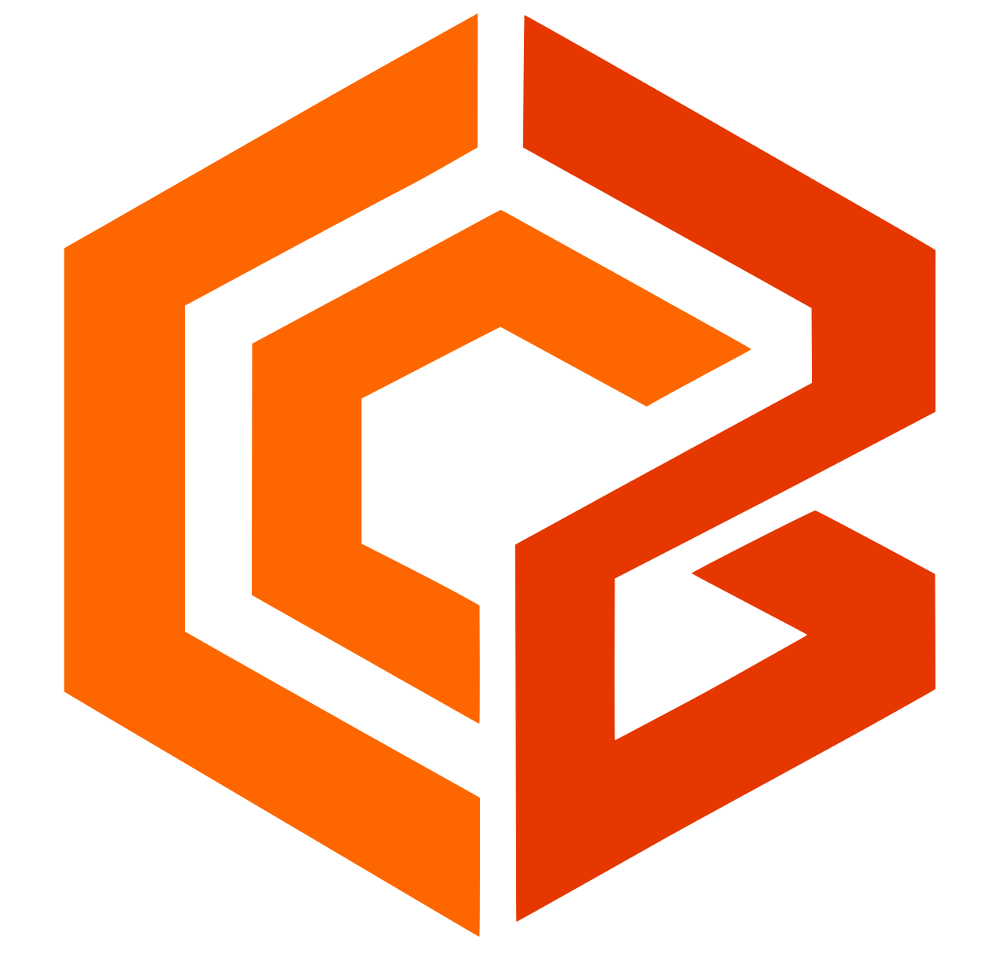

Arquivo:
Por cor cria camadas com as cores do SVG. Camada atual coloca toda a geometria na camada selecionada e respeita a cor dela. A espessura visual do traço SVG não expande o path nem muda a trajetória.
Recorte, redimensione, gire, aplique filtros e ajuste tons. A imagem editada será incorporada ao trabalho em milímetros.
Carregando editor de imagem…
Traços coloridos são movimentos de trabalho por camada; tracejado cinza são deslocamentos rápidos com o laser desligado. O primeiro deslocamento depende da posição real da cabeça.
Simulação visual pronta; nenhum hardware ou laser será acionado.
Estimativa calculada com os avanços configurados; não inclui deslocamentos rápidos, aceleração nem tempo de resposta do controlador.
A prévia preserva as cores da imagem para selecionar regiões. No editor, os vetores aplicados usam a cor da camada atual. A imagem fonte pode ser recuperada com Desfazer.
Ajuste os parâmetros para gerar a prévia.
Arraste nós e alças de curva ou ajuste as coordenadas locais. Curvas importadas são normalizadas para segmentos cúbicos editáveis.
Atalhos de edição não interceptam a digitação em campos de texto.